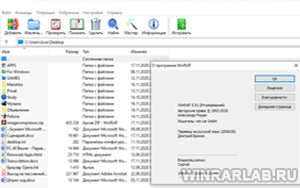
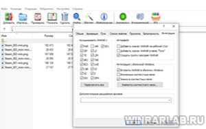

Архиваторы уже давно не новшество, они прочно закрепились на своем уровне приложений и WinRaR тому самый яркий пример. Вин рар скачать Торрент хотят по нескольким причинам и одна из которых это то что торрентами скачиваются уже заведомо взломанные версии программ или игр, хотя в принципе торрентом можно качать все что угодно. Торренты закрепили свое звание в сфере пиратского контента по тому как удобно раздавать сайтам файлы, так как сам торрент весит очень мало в отличии от того что будет качаться, плюс скорость большая если файл популярен.
|  |  |
 |
{kind=link}
{kind=link}
Архиватор WinRAR торрент на компьютер
Зачем нужен WinRAR знает даже начинающий пользователь: сжимать информацию и хранить ее в компактном виде. С ее помощью можно не только сжимать информацию, хранить или передавать по интернету, но и создавать многотомные самораспаковывающиеся архивы или отправлять большой массив данных с одним файлом вместо десятка прикрепленных файлов. Программа незаменимая и пригодится может всегда и везде.
Скорее всего винрар скачивают именно торрентом потому что это точно уже будет пролеченная программа ну и к тому же те кто хочет торрент скорее всего уже пользуются и пиратской версией windows терять им особо не чего. Стоит учесть тот факт что торрент раздачи не всегда безопасны, да и к тому же программа она не большого веса, мы бы рекомендовали скачать оригинальную версию программы и активировать простым переносом файла в папку программы(у нас на сайте именно такой метод в основе), в этом случае вы будите уверенными в том что основной файл не кто не модифицировал вшив туда что то зловредное.
WinRAR для версий windows:
Скачать WinRAR торрент бесплатно
| Приложение | OS | Интерфейс | Версия | Загрузка |
|---|---|---|---|---|
| WinRAR (Винрар) | Windows 10 | на русском | Бесплатно (Торрент) | |
| WinRAR (Винрар) | Windows 8 | на русском | Бесплатно (Торрент) | |
| WinRAR (Винрар) | Windows 7 | на русском | Бесплатно (Торрент) | |
| WinRAR (Винрар) | Windows XP | на русском | Бесплатно (Торрент) | |
| Внимание!! Для вечной активации, скачайте ключ лицензии и перенесите файл rarreg.key в папку установленной программы. | ||||
Как установить WinRAR:
{kind=link}
{kind=link}
Если говорить грубо то торрент файлы это некие ссылки на кусочки файла которые находятся на компьютерах пользователей, по этой причине гораздо проще раздавать файлы не имея большого файла на сайте или блоге. А вы знали что WinRAR после 40 дней пробного периода не перестает работать а на против работает как и работал, и как и раньше будет только выводить окно при использовании вин рар что программа пробная? В пробной версии нельзя создавать sfx архивы и есть ряд других ограничений но основной функционал не куда не пропадает.
активировал сенкс
нечего сказать — архиватор хороший!
Хорошая информация,сначала ничего не поняла,как классно,что здесь есть картинки!!!
Устраивает все.
Поддержка большинства форматов
пользуюсь! рекомендую!
В принципе всё нормально
У меня стоит Winrar на Windows 10,отлично распаковывает и архивирует
надо попробовать